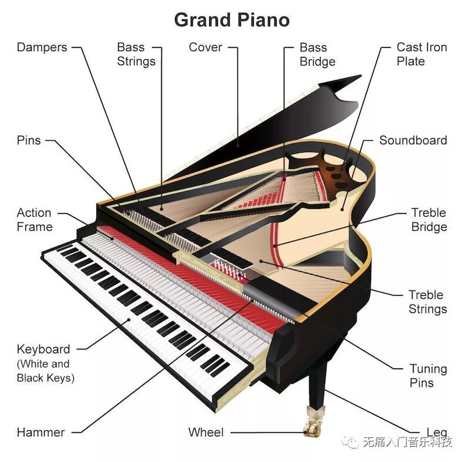
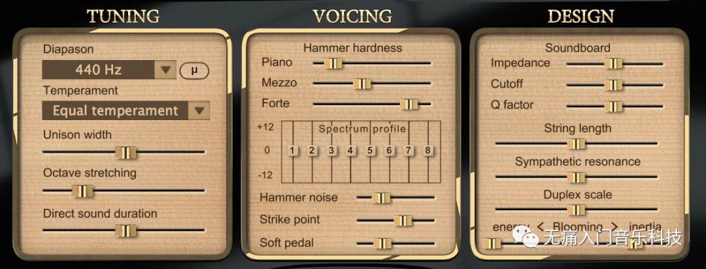
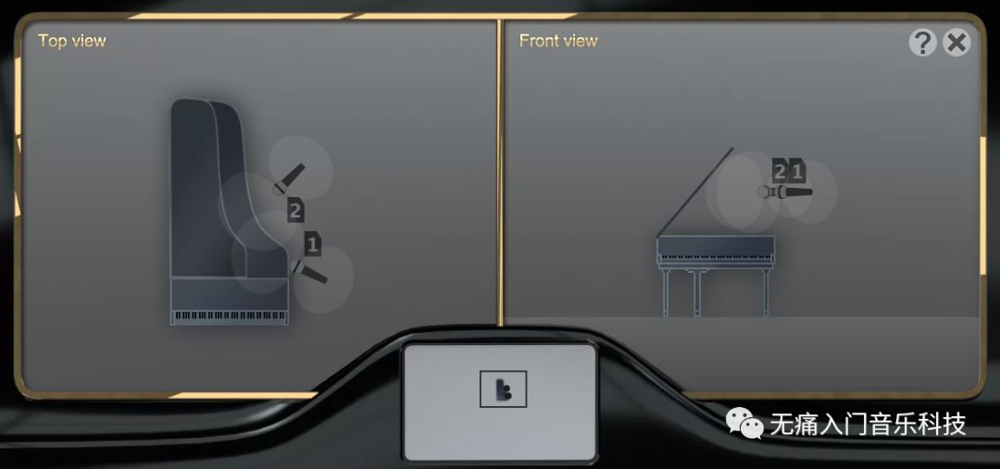
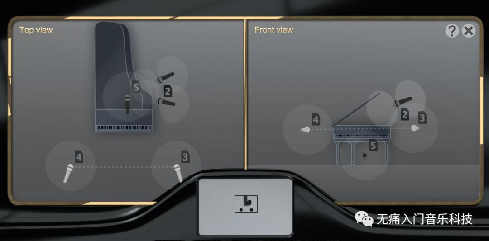

「NIME-03」为什么说钢琴是乐器之王？复杂！
由知乎上的问题“有哪些钢琴上的事实，没有一定钢琴知识的人不会相信”想到的一篇声学相关小介绍。
♬ 本文为NIME系列第3篇文章，乐器不新奇，但这些钢琴声学的知识也许有点儿新奇 ♬
钢琴由于其丰富的表现力经常被大众称为“乐器之王”，这其实可以归功于它复杂的物理结构，但高复杂度也使钢琴中许多细微的声学变化不能被全面地建模，因此诸多电钢琴无法复现真钢琴的表现力。
首先来看一个“钢琴解剖图”，图里标注的一些术语会在下文提到：

大众所理解的“弹钢琴”这个动作，主要指的是“弹下键盘上(keyboard)的黑白琴键(key)”，实际上整个运作是一种“琴键被按下，带动打击槌(hammer)敲击琴弦(string)”的击弦机制。再加上由Sébastien
Erard发明的双重擒纵机制，使得演奏者可以快速地重复弹奏一个音符，而不需要完全放开琴键。当演奏者真正将手指离开琴键时，止音器(damper)就会落在琴弦上使琴弦停止振动。下方视频演示了连奏音符时，打击槌、琴弦、以及止音器之间的交互过程：
我们可以从视频中看到，当弹下“一个”琴键时，对应敲击了“三个”琴弦，这不仅仅是为了增加音量，更是使每个音听上去更饱满。而且从低音区(bass)到高音区(treble)，琴弦的长短粗细也不一样，越长的琴弦振动频率(frequency)越低，所以发出的音高(pitch)也就越低。琴弦主要由琴桥(bridge)支撑一端，低中音区琴弦的另一端由定弦器(pin)支撑，高音区的另一端则由承轴部件支撑。此外，琴弦与琴弦、琴弦与琴板(soundboard)等等部件之间发生的共振，都可以让每个音听上去不那么单调。而踏板(pedal)的使用则会进一步改变每个音的音色，比如最右侧的延音踏板就能抬起所有琴弦上的止音器，因此让当前正在发声的音符持续发声，同时让已经“被静止”的琴弦轻微地参与共振，共同营造一种“梦幻”的氛围。
以上可知，一个钢琴上每个琴键具体会发出什么音色的声音，首先要取决于该钢琴是否符合制造标准，包括琴板材料、琴框形状、键盘高度、琴键摁下的深度、打击槌的型号、琴弦的直径和张力等等等等不要太多；然后需要调琴师傅对每个琴键进行调校，对每根琴弦进行调音（确保其发出对应音阶正确音高的程序），以及对每个打击槌进行整音（调整槌的硬度和弹性从而消除杂音、强调主音、并平衡音色）；最后在演奏家弹奏过程中，不同的力度会发出强(forte)、中(mezzo)、弱(piano)三种声音。
Pianoteq作为一款成熟的基于物理建模的商用声源软件，就将以上因素纳入到其声音合成过程的诸多可控参数中，软件端截图如下，不同牌子/型号的钢琴的初始值会有所不同：

最后，听众在听到一首钢琴曲时，还会由于曲子在录制时所处的场地、录音器材的设置等，听出“明明是同一个钢琴弹出来的曲子，怎么听上去不一样”的效果！当然大部分录音设置会根据所录钢琴曲的风格进行调整，举两个麦克风摆位的例子：
✎ 用两个麦克近距离录制古典钢琴曲时的摆位

✎ 用四个麦克录制蓝调钢琴曲时的摆位

录音之后还会进行混音(mixing)和母带(mastering)等等，才最终呈现出多数听众听歌时感受到的钢琴声，而这其中的奥秘又是另外一门声音工程的学问了！